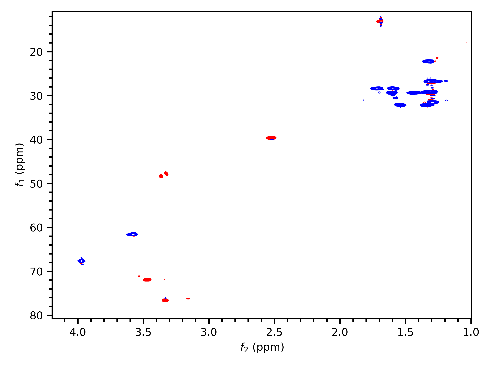

Quickstart¶
Importing a spectrum¶
Importing spectra is done with read(). read() takes three parameters: the path to the spectrum folder, the expno, and the procno. This returns one of several possible Dataset objects, depending on the dimensionality of the spectrum selected:
>>> import penguins as pg
>>> hsqc_ds = pg.read("data/rot1", 3, 1)
>>> hsqc_ds
Dataset2D('/Users/yongrenjie/penguins/tests/data/rot1/3/pdata/1')
(If you are not familiar with TopSpin’s directory layout yet, see TopSpin directories.) Note that there is no support for 3D or higher spectra.
Reading parameters¶
Spectral parameters (both acquisition and processing) can be accessed via their TopSpin names using dictionary-like syntax:
>>> hsqc_ds["ns"]
16
>>> hsqc_ds["td"] # see also "Non-Uniform Sampling"
array([ 128, 2048])
>>> hsqc_ds["si"]
array([1024, 2048])
>>> hsqc_ds["nuc1"]
('13C', '1H')
For 2D spectra, parameters which have values in both the indirect and direct dimensions are stored as either a tuple or a numpy.ndarray, depending on whether the underlying values can be coerced to a float or not. Some parameters (such as those above) only make sense as ints, and those are stored as ints, not floats.
The first element is always the value for the indirect (f1) dimension, and the second element the value for the direct (f2) dimension.
Plotting spectra¶
Plotting is done in three stages:
Stage the spectrum (or spectra) to be plotted.
Options that are specific to each individual spectrum, such as the range of chemical shifts to be plotted, legend labels, colours, etc. are specified at this stage. This uses the
stage()methods on 1D and 2DDatasetobjects.Construct the plot.
Options that affect the entire plot, such as horizontal/vertical offset between spectra, axis labels, etc. are specified at this stage. This uses the
mkplot()function.Display the plot.
You can either display the window using
show(), or save a figure usingsavefig(). Both act as wrappers around the correspondingmatplotlibfunctions.
An example:
# Staging, using the 2D dataset we read in earlier
hsqc_ds.stage(f1_bounds="11..81", # "lower..upper"
f2_bounds=(1, 4.2), # tuples also acceptable as bounds
colors=("blue", "red"), # (positive, negative)
)
# Construct
pg.mkplot()
# Display
pg.show()
will give the following inset of the HSQC:
This dataset has somewhat poor signal-to-noise, and the automatically chosen contour levels are slightly suboptimal. Contour levels can be manually specified using the parameter levels in stage(). This is discussed in greater detail at 2D Plotting in Detail.
An example of a 1D plot is as follows:
# Staging
prot = pg.read("data/rot1", 1, 1)
prot.stage(bounds="..7", # or "bounds=(None, 7)": means everything up to 7 ppm
color="darkviolet",
label=r"$\mathrm{^{1}H}$") # using some LaTeX syntax
# Construct and display
pg.mkplot; pg.show()
For a more complete explanation of the options, please see 1D Plotting in Detail.